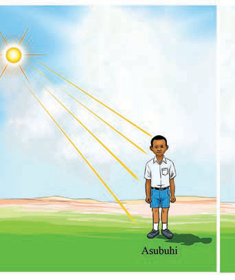
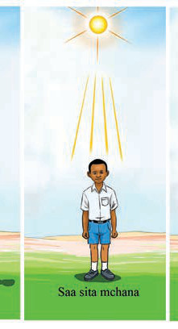
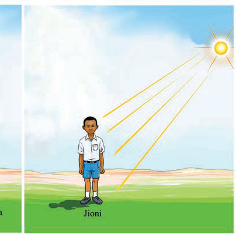

Asubuhi

Saa sita mchana

Jioni
Kielelezo namba 2:Kubaini Pande Kuu za Dunia kwa kutumia uelekeo wa kivuli
Kumbuka, ni vigumu kufanya utambuzi wa Pande Kuu za Dunia kwa njia ya uelekeo wa kivuli wakati wa jua la utosi (saa sita mchana), kwani katika muda huu kivuli chako kinakuwa kimekuzunguka.
Kazi ya kufanya namba 2
1. Nenda nje ya darasa wakati wa asubuhi, na simama eneo la katikati ya shule yako;
2. Baini upande wa jua linakochomoza, kisha bainisha Pande Kuu za Dunia na utaje vitu vinavyopatikana katika upande husika.
3. Tengeneza kifani cha Pande Kuu za Dunia kwa kutumia makunzi yanayopatikana katika mazingira uliopo.